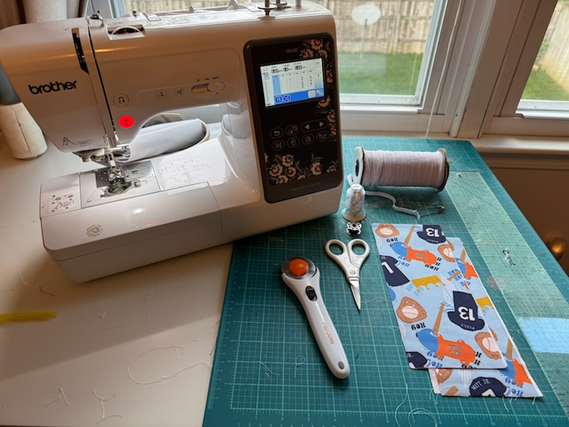
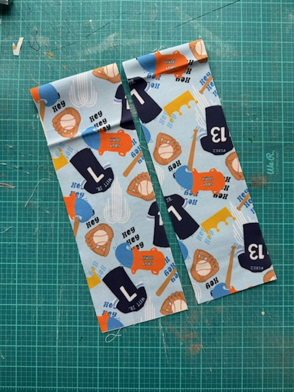
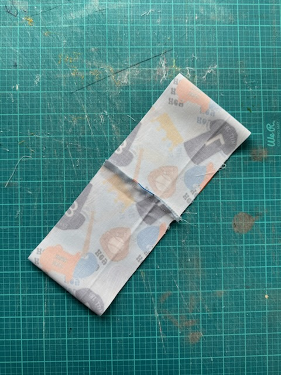
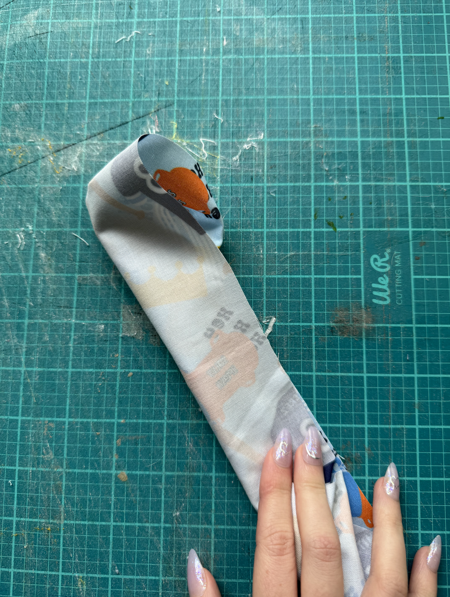
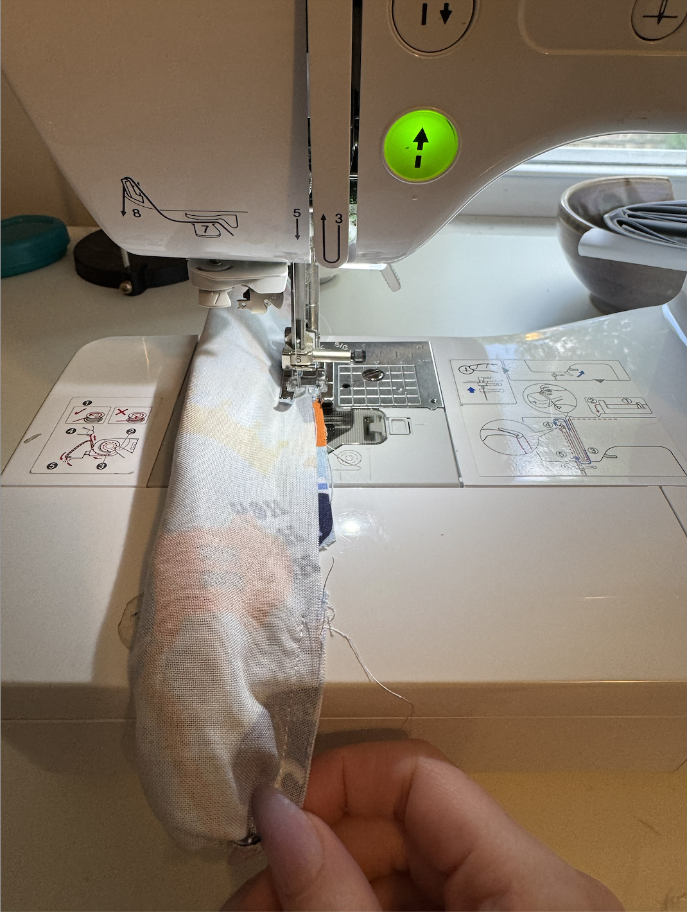
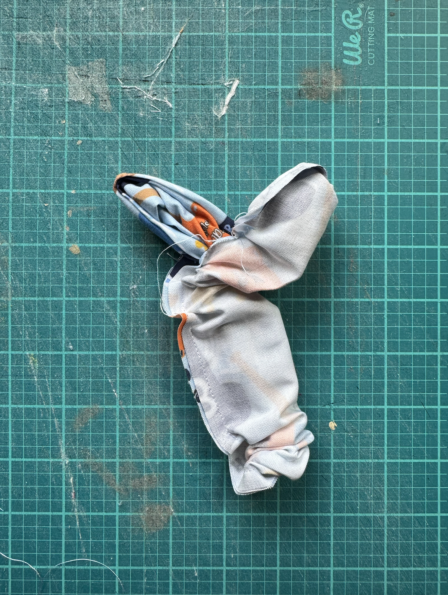
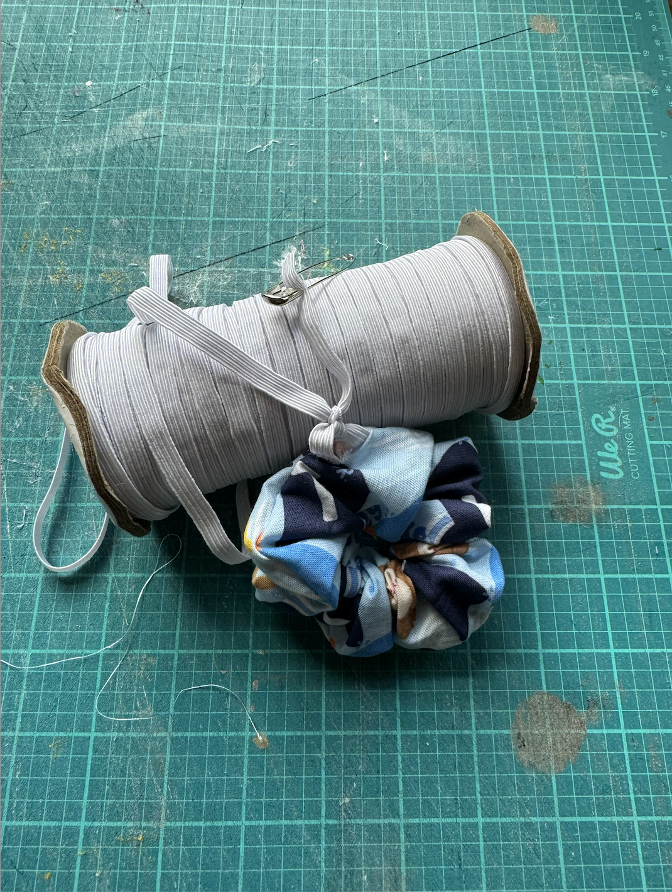
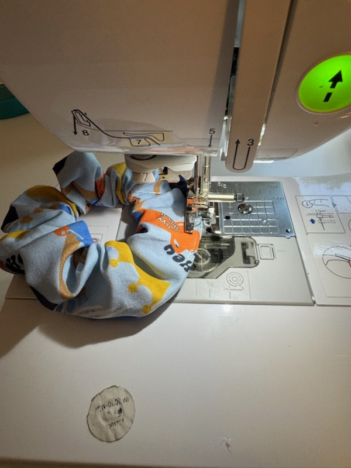

How To Make A Scrunchie

Step By Step Walkthrough
You Will Need:

- Sewing Machine
- Ruler
- Rotary Cutter and Cutting Mat (Optional but helps)
- Fabric (Enough for 2 4inch by 17inch strips)
- Thread
- Bobbin Thread
- Safety Pin
- Elastic
- Scissors
- Cut Your Fabric
- Stitch The Two Ends
- "Burrito Your Fabric"
- Stitch and Pull
- Turn Right-side Out
- Thread the Elastic
- Top Stitch Shut
- Voila! You Have A Scrunchie
Grab your fabric and cut two 4 by 17 inch strips.

Take the two strips and lay them on top of each other so the pattern is facing in. Next you are going to sew both of the 4 inch ends together to form a loop.

Now that the two pieces are joined, you are going to fold in one side of the scrunchie so it's in the center of the fabric. Next you will fold the other end over the folded insides like a burrito.

Keeping the inner fold away from the needle, you will stitch and pull the top layer fold. Make sure to leave a small hole so you can turn your scrunchie.

Pull the fabric inside your scrunchie through the hole you left until the entire scrunchie is now right-side out.

Take a safety pin and your elastic and thread it through the hole of the scrunchie. You will knot it around your wrist at a diameter that is comfortable to you.

Your scrunchie should be sturdy and look like a proper hair tie. Top stitch over the hole to close up your scrunchie.

wear it on your wrist or use it to tie your hair back!